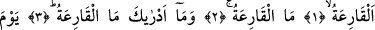
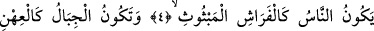
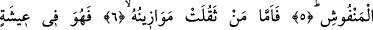
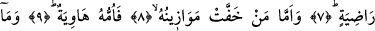
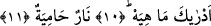
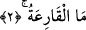

NEDİR O KAPI ÇALAN?
Bismillâhirrahmânirrahîm
1. Kapı çalan!
2. Nedir o kapı çalan?
3. O kapı çalanın ne olduğunu bilir misin?
4. İnsanların, ateşin etrafını sarmış pervaneler gibi olduğu,
5. Dağların da atılmış renkli yüne dönüştüğü gündür (o Kâria!)
6. O gün kimin tartılan ameli ağır gelirse
7. İşte o, hoşnut edici bir yaşayış içinde olur.
8. Ameli yeğni olana gelince,
9. İşte onun anası (yeri, yurdu) Hâviye’ dir.
10. Nedir o (Hâviye) bilir misin?
11. Kızgın ateş!
“el-Kâria” aslında, kendisinden ses gelecek şekilde şiddetle vurmak ve dayanmak
demektir. Zamanla zamanın getirdiği büyük hâdiselere “Kâria” denmiştir.
Bu âyet-i kerimede yer alan “Kâria” kelimesinden maksad ise, başlangıcı sûra ilk
üfürüş, sonu ise tüm yaratıklar arasında hüküm verme olan “Kıyamet”tir. Bu sürece
“Kâria” denmesinin sebebi, bu olayın kalplere ve kulaklara çeşit çeşit korku ve
dehşetler salması sebebiyledir. O anda ulvî ve süflî bütün cisimler bir halden başka bir
hâle geçerler. Sema (gök) yarılır; güneş ve yıldızlar katlanıp dürülür, söner, kararıp
dökülür; yeryüzü ve dağlar toz duman olup etrafa saçılır.